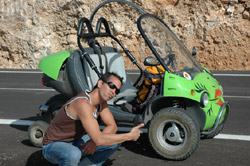

|
e-Grips Routesetting Interview: Kynan Waggoner 
How long have you been setting and climbing? "I have been setting for 8 years and climbing for 9." How did you learn? "At first, I tried to teach myself. Pretty lame efforts, to be honest. I ended up taking a routesetting clinic from Tony Yaniro in 2000 and that was where I really began my education at coursesetting." What do you most enjoy about setting? "I really like setting for competitions. The pressure is on, and the final result is directly influenced by the quality of work that the coursesetter has managed to put on the wall." What are some of your favorite events you’ve been a part of? "The last 5 Junior National events, The Spot Bouldering Series Finals 2007, all of the ABS Regionals that took place in Miami, Youth World Championships in Ibarra, Ecuador." What makes a "good" routesetter? "The ability to listen and the ability to separate your ego from your route or problem." What do you think makes YOU a "good" routesetter? What would your friends say? "I know how to listen and to step back from something if I know that another coursesetter is capable of taking care of business. I think that my main skill set lies in managing a large crew of assistants and knowing when I need to step in and have final say over a route or a problem. I think that my friends would say that I can be very calculating and business – like during coursesetting for a competition." Where have you, or do you, set? "I have set at over 20 gyms across the US, mostly for competitions. My main stomping ground was X-treme Rock Climbing in Miami, FL for many years. (www.x-tremerock.com) Right now, I do not set commercially for any gyms, I have just been setting for competitions." What are favorite events you’ve been a part of? "The big events are always fun. The Sendfest events are really cool, its summer, the strongest climbers are out for the trade show and people seem psyched to throw down. I also like to do the local events because you can set a really crazy style and the climbers have time to work stuff out." Do you have any favorite moves or problems that you've set? "Too many to list. I know that it sounds ultra – conceited, but I have been pleased with almost every route or problem that I have set for a competition. I have currently been trying to force the figure 4 on a competition route that doesn’t cause some severe bottlenecking. I think that it is easy to set for a boudering comp with multiple attempts, but on an onsight –format competition route, it is a little risky." What is your favorite e-Grips set? "Again, too many to list. That is like trying to list my favorite dessert. Probably the Myorcan tufa set or the Comfy Crimps." Favorite Unique Feature? "Bubble Wrap." Finally, how would you describe what makes e-Grips handholds the best? "E-Grips are the perfect blend of functionality, aesthetics, and comfort. The shapers are the best in the industry, hands down." |